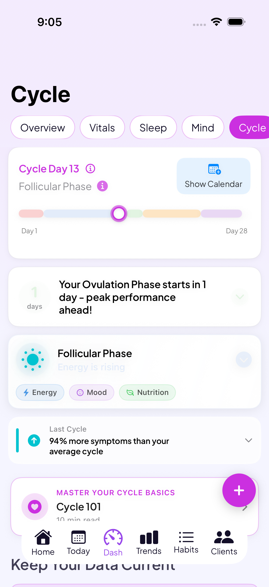

A cycle syncing app built around your own patterns
Log your workouts, meals, mood, sleep, and energy, and Go Go Gaia tags each entry with your current cycle phase automatically. Instead of prescribing what a textbook phase is supposed to feel like, it looks at your own history and shows you what actually shows up for you, phase by phase.
Download Go Go GaiaNot on iPhone? Use the web app in any browser.
Built for cycle syncing
Phase detection built in
Go Go Gaia detects your menstrual, follicular, ovulatory, and luteal phases and tags every entry with the phase it happened in, so your history is organized by phase without extra work.
1-tap logging
Log workouts, meals, mood, sleep, and energy in seconds. Fast logging is what makes it realistic to keep tracking past week three, when most cycle syncing attempts stall out.
Correlation insights from your own data
A correlation engine looks across your logged history and surfaces real patterns, like which phase your toughest workouts tend to land in or how your sleep shifts as you move through your cycle. These come from what you've logged, not a generic phase script.
Adapts to your actual cycle length
Predictions come from your own logged data instead of assuming a standard 28-day cycle, so phase detection still works if your cycles run short, long, or irregular.
Wearable data, tracked automatically
Connect Apple Watch, Oura, or Garmin and your sleep, HRV, and temperature flow in on their own, with workouts syncing from Apple Watch and Garmin — adding to the picture without extra manual logging.
Habits that adjust to your cycle phase
Custom habits update alongside your phase, so the routine you're tracking stays connected to where you are in your cycle instead of staying static all month.
How it fits together
Most cycle syncing tools handle one piece: a workout app tells you what to do today, a hormone app explains what's happening, a period tracker predicts your bleeding days. Go Go Gaia keeps your cycle, workouts, meals, mood, sleep, and energy in one place, then shows you the connections between them, like "your energy is higher on weeks you exercise three times" or "your sleep drops in a particular stretch of your cycle." That's the same correlation engine that runs behind every phase, not a separate feature bolted on for cycle syncing.
What you can log

Private by default
No ads, no data selling. Your health data is encrypted, and you can export or delete it anytime.
Frequently asked questions
A cycle syncing app detects which phase of your cycle you're in (menstrual, follicular, ovulatory, luteal) and tags whatever you log — workouts, meals, mood, sleep, energy — with that phase automatically. Over time it surfaces patterns from your own data, like which phase your hardest workouts tend to land in, instead of telling you what a generic phase is supposed to feel like.
Yes. A period tracker mainly predicts bleeding days. A cycle phase tracker app like Go Go Gaia detects all four phases and connects them to the rest of your logged data — symptoms, flow, energy, workouts, mood, and sleep — so you can see how your phase relates to how you actually feel and perform.
Yes. You log your workouts with 1-tap logging, and Go Go Gaia tags each session with your current cycle phase. If you wear an Apple Watch, Oura, or Garmin, your workout, sleep, and heart rate data can flow in automatically, giving the app more to work with when it looks for patterns tied to your phase.
Luteal phase tracking means logging your symptoms, mood, sleep, and energy specifically during the luteal phase (the days after ovulation and before your next period) so you can see your own patterns across multiple cycles. Go Go Gaia's phase detection identifies when you're in luteal phase and tags your entries accordingly, so you can look back and see what tends to show up during that window for you.
Yes. Go Go Gaia predicts your phases from your own logged data rather than assuming a fixed 28-day cycle, so it still works if you have PCOS, perimenopause, or another source of irregularity. You'll still be able to track energy, mood, and symptom patterns even as cycle length shifts.
You'll see some basic correlations after your first tracked cycle, but patterns get more specific after 2-3 complete cycles of consistent logging. The more you log, the more the app's correlation insights have to work with.
No. Logging 5-6 days a week gives Go Go Gaia enough data to find patterns, and missing days here and there won't break the analysis. 1-tap logging is designed to make daily entries fast enough to keep up with.
Still comparing options? See our cycle syncing app comparison.
See your own patterns, phase by phase
Start logging today. Your history builds with every cycle.
Download Go Go GaiaNot on iPhone? Use the web app in any browser.
Tracking for other conditions
IVF tracking · PCOS tracking · Endometriosis tracking · Perimenopause tracking · All conditions